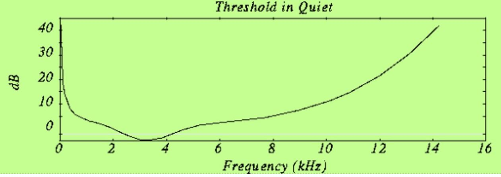
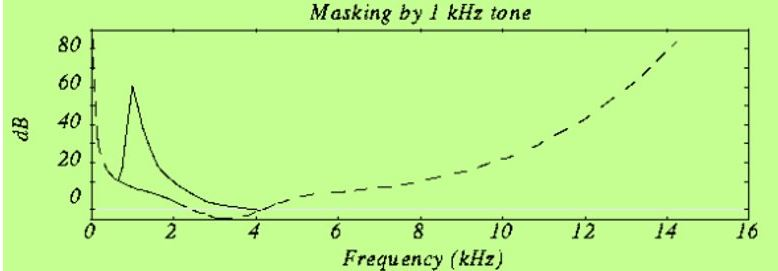
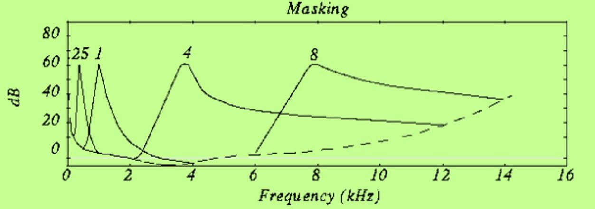
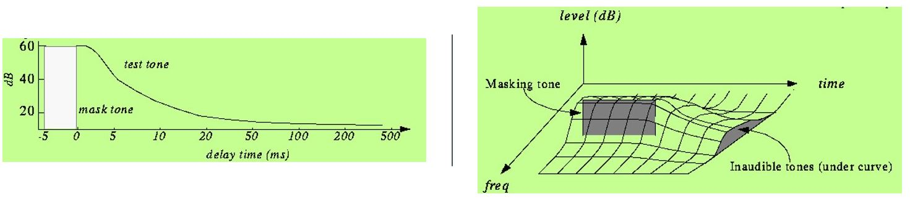
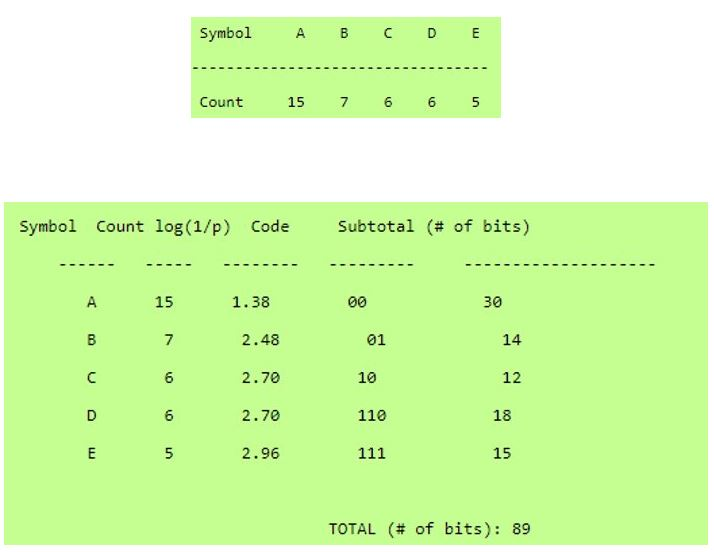
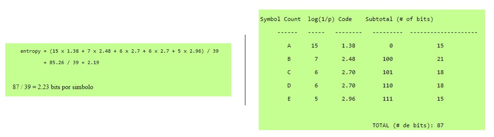

¿Qué es?
MP3 es la abreviatura de Motion Picture Experts Group, (grupo de expertos de la película) y es un formato de
archivo de sonido que tiene una alta calidad y con un tamaño muy reducido.
Historia
La primera patente de MP3 fue registrada en 1992 por el alemán Karlheinz Brandenburg, director de tecnologías
de medio electrónicos del instituto Fraunhofer IIS de la red de centros de investigación alemanes
Fraunhofer- Gesellschaft.
En 1995, K. Brandenburg, considerado el padre e inventor del mp3, usa por primera vez esta extensión para
los archivos guardados en su ordenador y empieza a ganar dinero con la patente.
Primera canción MP3
Karlheinz Brandenburg usó la canción “Tom’s Diner» de Suzanne Vega para comprobar el algoritmo de compresión
del formato mp3. “Tom’s Diner” es la primera canción del álbum Solitude Standing de 1987.
Brandenburg eligió este tema cantado a cappella por su simplicidad y la suavidad tonal de la voz, que
permitía detectar las imperfecciones de la grabación.
Origen del MP3
El instituto Fraunhofer de Alemania empieza a investigar la compresión de música en 1987, financiado por el
proyecto EUREKA. En 1989, Fraunhofer consigue la primera patente de MP3. Y, en 1992, el algoritmo inventado
por el profesor Dieter Seitzer de la Universidad de Erlangen para comprimir música se integra en el MPEG-1.
En 1994, se integra en el MPEG-2
Historia
- 1980: El estudiante de doctorado Karlheinz Brandenburg, de la universidad alemana de Nuremberg, empieza
a trabajar sobre un sistema de compresión de música a principios de los ochenta.
- 1987: El instituto Fraunhofer de Alemania empieza a investigar la compresión de música, financiado por
el proyecto EUREKA de la Unión Europea como EU-147. Karlheinz Brandenburg entra a formar parte del
proyecto.
- 1989: El grupo MPEG, Moving Picture Experts Group, desarrolla el primer estándar MPEG-1 para el
almacenaje de audio y vídeo.
- 1991: Hans-Georg Mussman, director del proyecto MPEG, crea un grupo de trabajo formado por León Van de
Kerkhof, de Philips, Holanda, Yves-Franqois Dehery de la TDF-CCETT, Francia, y Karlheinz Brandenburg,
del instituto Rundfunktechnik, Alemania, para crear el formato MP3 (tres capas) que tiene la misma
calidad a 128 bíts que el formato MP2 a 192 bits.
- 1994: Segunda generación de MPEG-2, utilizado para la compresión de imagen y sonido y su transmi¬sión
para la televisión digital terrestre. Se coloca en Internet la primera versión beta de MP3.
Características
- Un archivo MP3 consiste de cuadros (frames) MP3, formados por un bloque de encabezado y otro de
datos.
- Los cuadros en el archivo no son elementos independientes.
- Los bloques de datos contienen la información de audio en términos de frecuencia y amplitud.
- Entre varios de sus bits, el bloque de encabezado contiene un bit para indicar que utiliza el estándar
MPEG y otros dos para indicar que utiliza la capa 3.
- Un archivo puede contener “Información auxiliar”, definida por el usuario, sin una longitud máxima
especificada.
- Los archivos MP3 no soportan por defecto metadatos como el nombre del artista y de la canción.
Usualmente, es necesario utilizar otros estándares para el formato de etiquetas de metadatos, como
ID3v1.
Efectividad de compresión
- Como en la mayoría de los casos de codificación con compresión, existe un balance entre calidad del
resultado
y el tamaño en bits del mismo.
- Al codificar audio en MP3, se puede seleccionar un bitrate de cuántos kilobits por segundo de audio se
desean.
- Con un bitrate demasiado bajo, es común que en la codificación MP3 resultante se escuchen sonidos que no
existían en la grabación original.
- Además del bitrate, la calidad del audio MP3 depende de la efectividad del algoritmo de codificación
utilizado y la complejidad de la señal original.
- Es posible utilizar bitrates variables para la codificación. El motivo es el hecho de que es más simple
codificar ciertos segmentos del audio, como silencio o pocos tonos, que otros más complejos.
- En las distintas versiones de MP3, los bitrates pueden ir desde los 8 hasta los 320 kilobits por
segundo.
Compresión del formato MP3
Para conseguir una reducción tan espectacular de la cantidad de bits necesarios para transmitir una señal de
audio MP· utiliza diferentes técnicas. Entre estas técnicas están las basadas en codificación perceptual y otras
como reserva de bytes, ensamblado de estéreo o códigos Hoffman. La codificación perceptual consiste en eliminar
toda la información que va en la señal de audio que el oído humano no es capaz de detectar.
- Codificacion percetual: El audio digital, en líneas, generales, se comprime muy poco usando métodos "sin
pérdidas" convencionales dado que existen muy pocas redundancias en la corriente de bits. Las técnicas
de codificación perceptual se han desarrollado de extensos estudios psico acústicos de cómo el oído
humano y el cerebro detectan e interpretan el sonido.
- Umbral mínimo de audición: El umbral mínimo de audición del oído es la potencia por debajo de la cual un
tono a una frecuencia dada no es capaz de ser detectado por el oído. Este umbral es no-lineal.

- Efecto de enmascaramiento: Este efecto consiste en que, cuando en una señal de audio existe un tono a
una frecuencia dada, produce un efecto de enmascaramiento en las frecuencias cercanas a ella, de manera
que si en estas frecuencias cercanas la señal no supera un determinado umbral de potencia no podrán ser
escuchadas y, por lo tanto, no será necesario codificarlas.

En este caso vemos varios tonos enmascaradores y los nuevos umbrales de audición resultantes. En MP3 lo que
se hace es dividir el espectro que se va a transmitir (es decir entre los 2 y los 5 KHz) en subbandas de
frecuencia, de manera que se evalúa la potencia de la subbanda y se crea el umbral de enmascaramiento en la
subbandas cercanas.

Además el enmascaramiento no sólo es en frecencia sino también en el tiempo como podemos apreciar en la
figura.

- Reserva de bytes: A menudo, algunos pasajes de una pieza musical no pueden ser codificados a una misma
tasa sin alterar la calidad de la música. MP· usa entonces una pequeña reserva de bytes que actúa como
un buffer usando la capacidad de pasajes que pueden ser codificados a una tasa inferior en el flujo
dado.
- El ensamblador de estéreo: En el caso de una señal estereofónica, el formato MP3 puede usar algunas
herramientas mas, para conseguir comprimir más aun los datos.
- Intensidad de éstereo: El oído humano no es capaz de localizar con total certeza el origen espacial de
sonidos para frecuencias muy altas o muy bajas. Esta técnica aprovecho esto, grabando algunas
frecuencias como una señal monofónica, de manera que se resta al sonido un mínimo de contenido
espacial.
- MID/SIDE(M/S) STEREO: Cuando los canales izquierdo y derecho son similares entonces se crea un canal
medio (L+R) y un canal lateral (L-R), que son codificados en lugar de codificar el canal izquierdo por
un lado y el derecho por otro. De esta forma se consigue reducir los datos transmitidos utilizando menos
bits para el canal lateral. Después durante la reproducción el decodificador MP3 reconstruirá los
canales izquierdo y derecho.
- cODIFICACION hOFFMAN: Esta técnica de codificación se usa al final de todo el proceso. Actúa creando
códigos de longitud variable, de manera que los símbolos que aparecen en el flujo de bits con más
probabilidad tienen códigos mas cortos. La traducción entre símbolos y códigos se realiza mediante una
tabla. Cada código tiene un único prefijo de manera que los códigos pueden ser decodificados
correctamente a pesar de su longitud variable. Este tipo de codificación permite de media reducir un 20%
la cantidad de datos a transmitir
- Algoritmo de Shannon-Fano: Vemos el símbolo y abajo el numero de veces que ha salido. A continuación
codificamos los símbolos colocándolos en un árbol por orden de probabilidad.

- Codificacion Hoffman: La codificación Huffman es bastante parecida a lo anterior. Simplemente
construimos el árbol de la manera presentada en la figura, teniendo en cuenta las frecuencias de
aparición de cada uno de los símbolos.
En la transmisión de los códigos se da que el prefijo de cada código es único de manera que no se puede
confundir con el resto.
